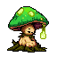
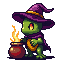
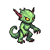
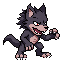
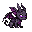

<meta charset="utf-8">
<title>새 몬스터 3종 시안</title>
<link rel="stylesheet" href="https://fonts.googleapis.com/css2?family=Do+Hyeon&family=IBM+Plex+Sans+KR:wght@400;600&display=swap">
<style>
/* 레이아웃: 역할마다 한 줄에 시안 둘(A·B). 게임과 같은 밤 색 한 테마 */
:root { color-scheme: dark; --page: #120c18; --ink: #ece4f2; --muted: #a99bb5; --line: #2f2439; --gold: #ffcf4d; --body: 'IBM Plex Sans KR', system-ui, sans-serif; }
body { background: var(--page); color: var(--ink); font: 15px/1.65 var(--body); }
main { max-width: 860px; margin: 0 auto; padding-block: 28px 64px; padding-inline: 16px; display: grid; gap: 30px; }
h1, h2 { font-family: 'Do Hyeon', sans-serif; font-weight: 400; margin: 0; text-wrap: balance; }
h1 { font-size: 30px; } h2 { font-size: 22px; }
p { margin: 0; max-width: 65ch; } .lede, .note { color: var(--muted); } .note { font-size: 13px; }
section { display: grid; gap: 12px; }
.row { display: flex; flex-wrap: wrap; gap: 18px; }
.c { display: grid; gap: 6px; justify-items: center; width: 200px; text-align: center; font-size: 14px; }
.c img { width: 192px; height: 192px; image-rendering: pixelated; background: #221b29; border: 1px solid var(--line); border-radius: 8px; }
.c small { color: var(--muted); font-size: 12px; }
.rec { font-size: 11px; color: #1c1206; background: var(--gold); padding: 2px 6px; border-radius: 4px; }
.decide { border: 1px solid var(--gold); border-radius: 6px; padding: 14px 16px; display: grid; gap: 6px; }
.decide h2 { color: var(--gold); font-size: 19px; }
ul { margin: 0; padding-left: 20px; display: grid; gap: 4px; }
</style>
<main>
  <header style="display:grid;gap:8px"><h1>새 몬스터 3종 시안</h1>
  <p class="lede">성 전체에서 한 몬스터는 한 칸만 놓게 바꾸면서, 칸이 열릴 때 무료로 채울 수 있게 새 무료 몬스터 3종을 더합니다(성 레벨이 되면 자동으로 들어옴). 아래는 그림 방향을 고르는 시안(64px 한 장)입니다. 고르신 것만 움직이는 캐릭터(대기·공격·쓰러짐)로 하나씩 만들어 다시 보여 드립니다.</p></header>

  <section><h2>1. 회복형 — 아군 몬스터 중 체력이 가장 낮은 하나를 회복</h2>
    <div class="row">
      <div class="c"><b>A. 역병 버섯 <span class="rec">추천</span></b><small>초록 포자 등불. 몸이 작고 귀여워 잘 읽힘</small></div>
      <div class="c"><b>B. 늪 두꺼비 마녀</b><small>가마솥을 젓는 마녀. 소품이 커서 전투 화면에서 넓게 차지</small></div>
    </div></section>

  <section><h2>2. 연속 공격형 — 빠르게 두 번 때림</h2>
    <div class="row">
      <div class="c"><b>A. 구울</b><small>마른 초록 괴물. 슬라임과 색이 겹침</small></div>
      <div class="c"><b>B. 늑대인간 <span class="rec">추천</span></b><small>회색 털·발톱. 다른 몬스터와 색이 안 겹치고 힘 있어 보임</small></div>
    </div></section>

  <section><h2>3. 광역 공격형 — 용사 전체에게 약한 어둠 공격</h2>
    <div class="row">
      <div class="c"><b>A. 가고일</b><small>박쥐 날개 돌 괴물. 새끼 용과 실루엣이 비슷</small></div>
      <div class="c"><b>B. 심연의 눈 <span class="rec">추천</span></b><small>보라 눈알과 촉수. 한눈에 "광역 마법"이 읽힘</small></div>
    </div></section>

  <section><h2>열리는 성 레벨 (제안)</h2>
    <p>성 Lv.1: 슬라임·해골병 + <b>연속 공격형</b> → 3칸 · 성 Lv.2: 임프 + <b>회복형·광역형</b> → 6칸 · 성 Lv.3: 거미 · 성 Lv.4: 골렘·밴시(지금 Lv.5·7에서 당김) → 9칸. 회복형은 처음부터 있으면 너무 버티기 쉬워 Lv.2로 둡니다.</p>
    <p class="note">능력치·스킬 숫자는 그림을 고르신 뒤 표로 따로 확인받습니다.</p></section>

  <section class="decide"><h2>정해 주실 것</h2><ul>
    <li>회복형: A 역병 버섯(추천) / B 두꺼비 마녀</li>
    <li>연속 공격형: A 구울 / B 늑대인간(추천)</li>
    <li>광역형: A 가고일 / B 심연의 눈(추천)</li>
  </ul></section>
</main>
